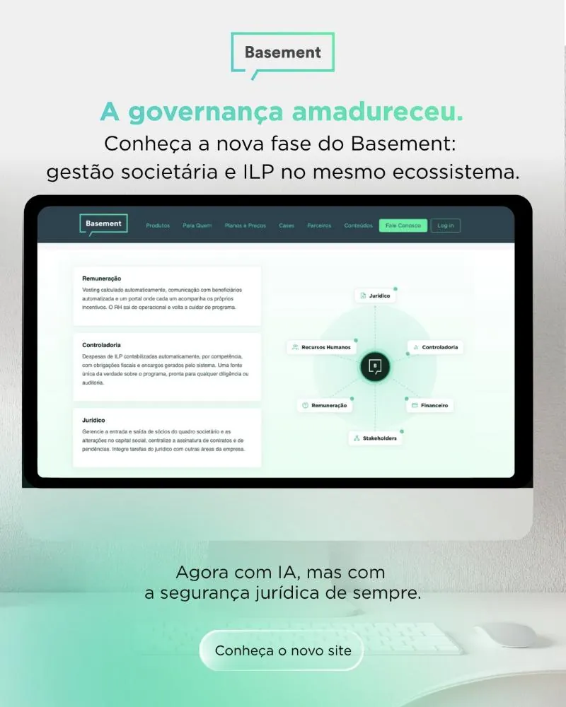
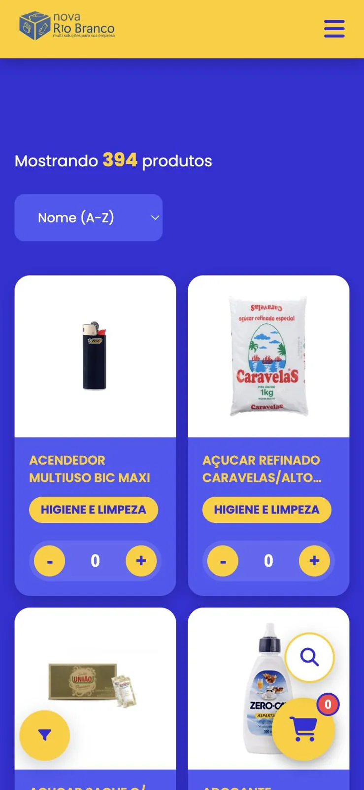
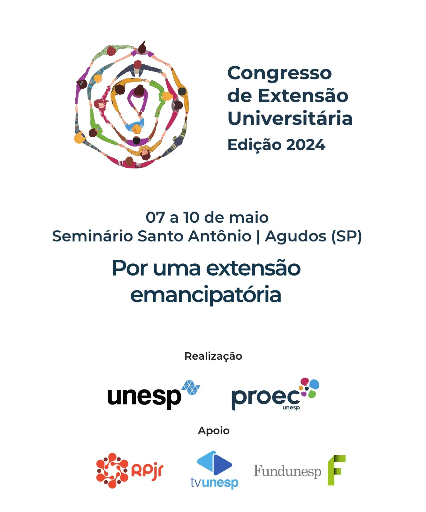
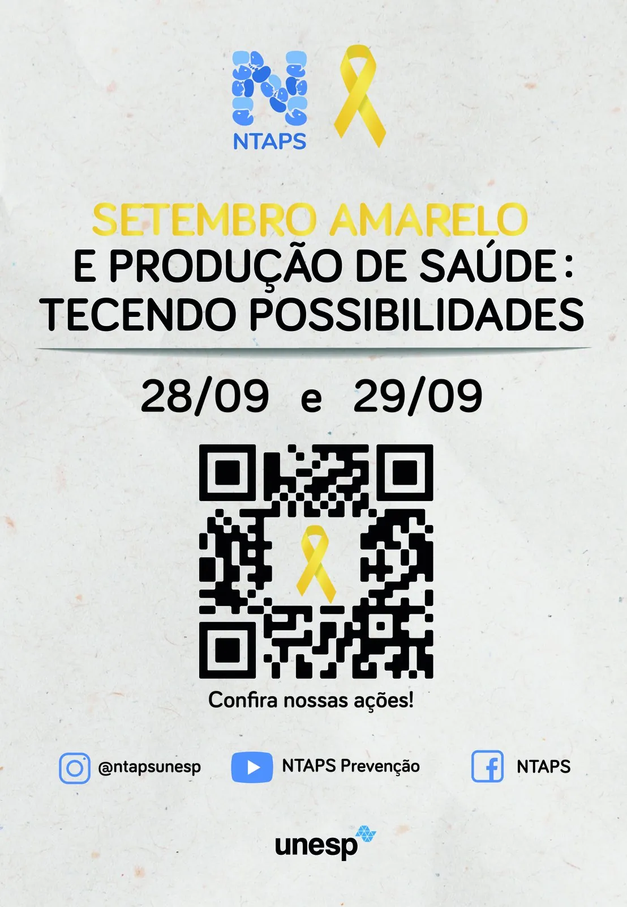
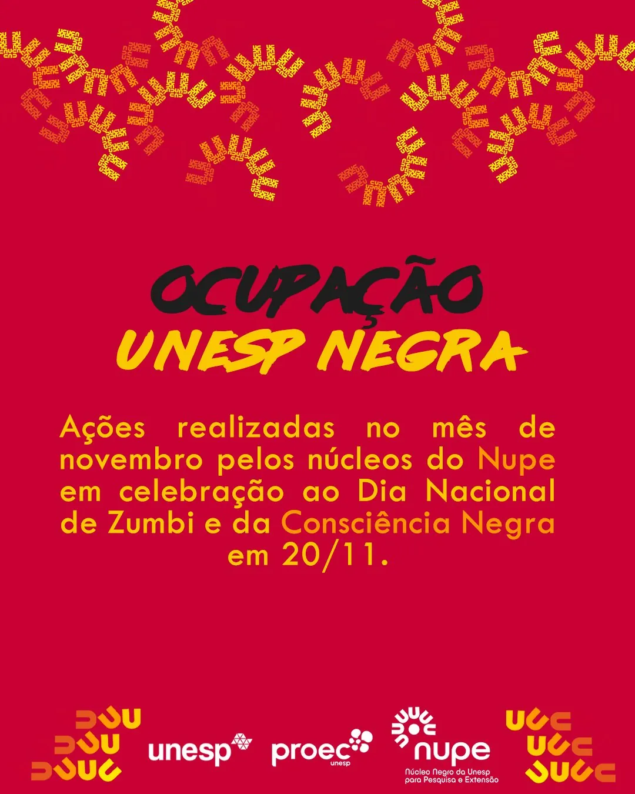
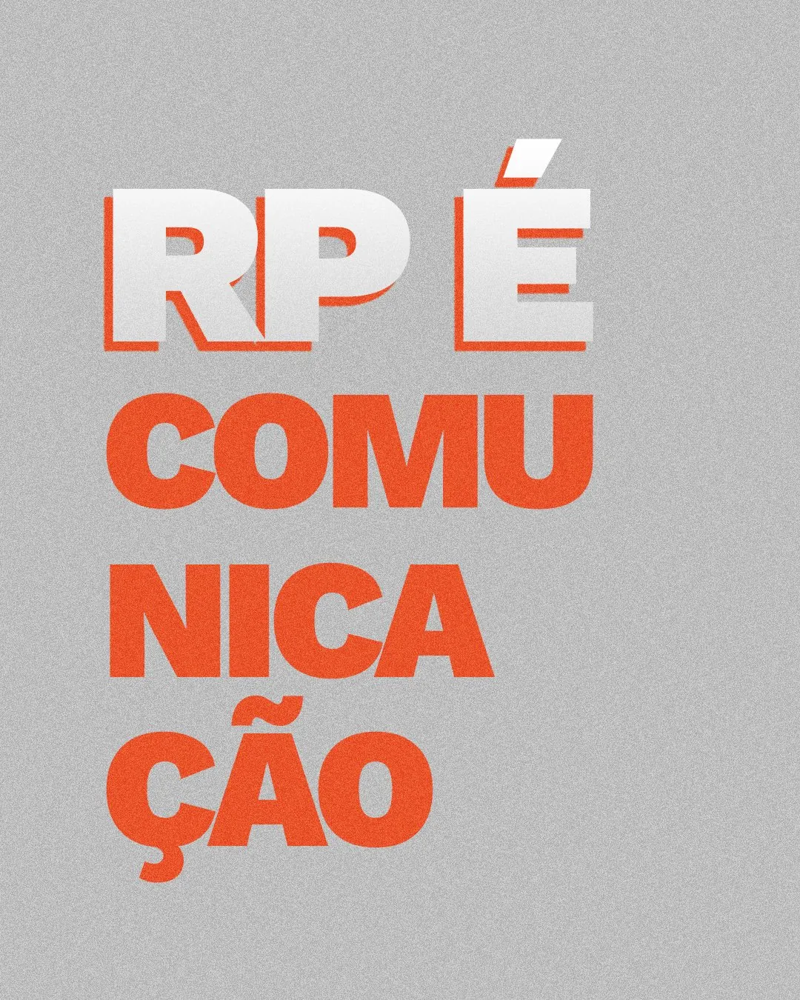

Henrique Marinhos. Design, comunicação e crítica cultural, do símbolo ao texto.
Relações-públicas pela Unesp. Construo identidades visuais, sites e campanhas para redes, e escrevo sobre cinema, música e TV no Tesoura com Ponta e no Persona.
Sobre
Trabalho entre design gráfico, web e comunicação. Fui estagiário de comunicação na Unesp, onde desenhei marcas e eventos para a Pró-Reitoria de Extensão e Cultura e para a Coordenadoria de Saúde, e hoje atendo como freelancer marcas como o Basement. Em paralelo, coordenei o Grupo de Pesquisa em Estética e Crítica Cultural Persona e publico crítica no portal Tesoura com Ponta.
Saiba maisServiços
001
Identidade visual
Marcas que se sustentam em qualquer peça
Símbolo, logotipo, versões, cores e regras de uso, do arquivo original ao sistema completo.
002
Web design
Sites leves, rápidos e fáceis de manter
Sites institucionais e catálogos em HTML, CSS e JavaScript, pensados para desktop e celular.
003
Social media
Peças e campanhas para o feed
Posts, carrosséis, campanhas de lançamento e cobertura de eventos, com texto e design juntos.
004
Crítica e redação
Texto com repertório e precisão
Crítica de cinema, música e TV, coberturas de festivais e redação para comunicação.
Trabalhos
Identidades visuais, sites e campanhas, em ordem do mais recente.

Basement
Social media · Design B2B — 2026 — atual

Papelaria Nova Rio Branco
Web design · Catálogo B2B — 2025 — 2026
Classic Tattoo PCH
Branding · Identidade visual — 2024 — 2025

Congresso de Extensão Universitária 2024
Identidade de evento — 2024

Coordenadoria de Saúde da Unesp
Estratégia de marca · Eventos — 2022 — 2024

NUPE
Redesign · Identidade de evento — 2022 — 2024

RP Unesp Bauru 40 anos
Social media · Evento — 2022
Crítica cultural
58 textos sobre cinema, música, séries e literatura. Os mais recentes:
- Na segunda temporada de Adults, a comédia abraça a rotina e se torna sua melhor versão
- Quanto vale entrar para a história, Big Brother Brasil 26?
- O Drama se consagra um clássico moderno com um espetáculo de cinismo
- Fama, dinheiro e o carisma apoteótico de Addison Rae no último pôr do sol do Lollapalooza
- 20 anos de E Se Fosse Verdade e a química que Hollywood esqueceu
- Arco constrói um rastro de afeto capaz de ecoar séculos no futuro
Livro
Persona: Estética, Crítica e Jornalismo Cultural
Trabalho de conclusão de curso publicado em livro, em coautoria com os professores Eli Vagner e Roseane Andrelo. Nasce dos anos de coordenação do Grupo de Pesquisa em Estética e Crítica Cultural Persona (2021 — 2024).
Uma coleção de marcas, sites e campanhas contadas do começo ao fim.
Estudos de caso
Detalhes
Acervo de crítica. Cinema, música, séries e o que mais couber numa sala escura.
- Na segunda temporada de Adults, a comédia abraça a rotina e se torna sua melhor versão
- Quanto vale entrar para a história, Big Brother Brasil 26?
- O Drama se consagra um clássico moderno com um espetáculo de cinismo
- Fama, dinheiro e o carisma apoteótico de Addison Rae no último pôr do sol do Lollapalooza
- 20 anos de E Se Fosse Verdade e a química que Hollywood esqueceu
- Arco constrói um rastro de afeto capaz de ecoar séculos no futuro
- O som do anacronismo em Viva Verdi!
- Zootopia 2: O Inimigo Agora é Outro
- O silêncio interrompido de Sonhos de Trem
- Anaconda e o Cinema sobre Cinema sobre cobras
- No Other Choice: o plano de carreira da barbárie
- Há 40 anos, o Studio Ghibli plantava um legado que floresce até hoje com Maira Cavenaghi
- Nas imperfeições de Corrida das Blogueiras, o propósito brilha mais que o acabamento
- Erupcja marca a fria e charmosa estreia de Charli xcx no Cinema
- O Ghibli Fest e seus 40 anos de mandato no topo das animações
- Hayley Williams desconstrói a si mesma em Ego Death at a Bachelorette Party
- A reviravolta nada devastadora de Rachel Chinouriri no Brasil
- E o prêmio de Melhor Roteiro Original (não) vai para 2025
- A doce, amarga e saudosa 12ª edição de MasterChef Amadores
- O relançamento de Princesa Mononoke: a ferida ainda não cicatrizou
- Na 3ª temporada de The Traitors, a coroa pesa mais que a adaga
- Mountainhead captura a ansiedade sobre bilionários messiânicos
- Lançado há onze anos, as especialidades do MasterChef ainda são rixas à brasileira
- Em Bauru após 24 anos, o Circo Stankowich nos faz querer fugir com ele
- No sopro da vida, descobrimos que Todas as Estradas de Terra Têm Gosto de Sal
- Corações Jovens não sabe nomear o amor, mas sabe senti-lo
- O Pardal na Chaminé compartilha o desejo de escapar
- O que podemos encontrar em Uma Terra Deixada para Trás?
- Lispectorante é um espetáculo espectral
- La Pampa não desacelera nem nas curvas mais sinuosas
- Todo Mundo (Ainda) Tem Problemas Sexuais (e amorosos)
- Corisco e Dadá: o Terror à luz do dia revive em alta definição
- A subversão em camadas de Brat and it’s completely different but also still brat
- Lady Gaga nem sabe do que está rindo em Harlequin com Nathalia Tetzner
- BRAT não reinventa a roda, ele queima pneu
- Quantum Baby é para nós, sobreviventes de um coração partido
- Ainda Temos o Amanhã é tão frustrante quanto verdadeiro
- Depois da Morte é um guia turístico do além-otimismo religioso
- Fale direito com ela: em BB/ANG3L, Tinashe reforça o porquê de não poder ser ignorada com Leonardo Pulcherio
- Há 10 anos, Questão de Tempo redefiniu os rumos de uma comédia romântica através de viagens no tempo
- Os cinco anos de Black Panther: The Album e a narrativa sob o olhar norte-americano
- Sem mais lágrimas para chorar, há 5 anos Sweetener nos permitiu conhecer Ariana Grande em sua melhor versão
- ¡Ai, mami! Há 5 anos, Kali Uchis mostrou que un album como Isolation no lo encuentras en Europa
- 60 anos de X-Men e sua alegoria disruptiva com Henrique Rabachini
- Croma Kid sintoniza a expressividade dos anos 1990 em uma tela fantástica e analógica
- Dulcineia explora a música como a conexão, inspiração e destino de um artista em busca de sua identidade
- El mal querer: em novas roupagens, Rosalía apresentou o flamenco para novas gerações há 5 anos
- Do Lixo ao Tesouro: Transformando Negativos em Positivos celebra a Arte como resistência
- My Mind & Me investiga Selena Gomez pelos olhos da alma com Vitória Vulcano
- A partir do afrofuturismo, Dirty Computer mantém seu impacto político intacto mesmo após 5 anos
- John Wick 4: Baba Yaga é um épico de ação que redefine riscos
- Treta revela que a paz interior é mais uma jornada do que um destino
- Do interior à metrópole, Marina Sena se arrisca com Vício Inerente
- Em As Primas, amor, Arte e violência se misturam na Argentina dos anos 1940
- A 2ª temporada de Hunters aproveita as brechas da liberdade criativa
- Pearl sangra até o próprio estrelato com Vitória Vulcano
- Avatar: O Caminho da Água oferece um banquete aos olhos, mas não ao coração
- Em Ctrl (Deluxe), SZA prova que é sempre possível melhorar
Henrique Marinhos, relações-públicas, designer e crítico cultural.
Info
Sou bacharel em Relações Públicas pela Unesp. Meu trabalho mistura estratégia de comunicação, design e escrita.
No design, faço identidades visuais, sites e peças para redes sociais. Na escrita, publico crítica de cinema, música e TV, cubro festivais (48ª e 49ª Mostra SP, 15º Olhar de Cinema) e participei da coletiva de imprensa de O Agente Secreto com elenco e direção.
Idiomas: português (nativo), inglês (avançado) e espanhol (em andamento).
Experiência
Basement
Designer · freelancer
Peças para Instagram e LinkedIn, estilização de documentos, flyers e outros materiais de venda B2B.
Ver projetoPapelaria Nova Rio Branco
Web designer · freelancer
Site, catálogo B2B e automação de orçamentos para apoiar o reposicionamento da marca.
Ver projetoRank My App
Customer care · freelancer
Atendimento de contas (C6 Bank, Sem Parar e Grupo GPA), com foco em resolução de problemas e retenção de usuários nas lojas de aplicativos (App Store e Play Store).
t.pr consulting
Brand designer · freelancer
Design de marca e produtos para o estúdio Classic Tattoo PCH (Califórnia, EUA).
Ver projetoUnesp
Estagiário de comunicação
Projetos de comunicação para a Pró-Reitoria de Extensão e Cultura e criação de marca, diretrizes e eventos para a Coordenadoria de Saúde da Unesp.
Ver projetoRd Cultural
Estagiário de comunicação
Conteúdo e design para Instagram e e-mail marketing, assessoria de imprensa, suporte em eventos e atualização de produtos no site com otimização de SEO.
Servimed Comercial
Assistente de compras
Assistente de compras, após o programa Jovem Aprendiz (set 2020 — nov 2021).
Formação
Unesp — Universidade Estadual Paulista
Bacharel em Relações Públicas
SENAI
Desenvolvimento em JavaScript · Microsoft Power BI
CNA Idiomas
Inglês avançado · certificado Cambridge (CEFR B2)
Ferramentas
Design
Web
Vídeo
Gestão